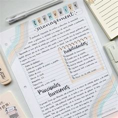
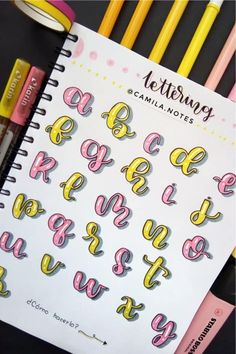
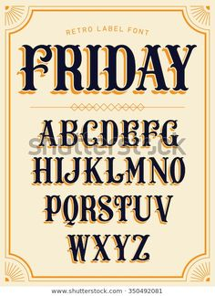
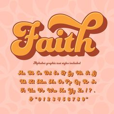
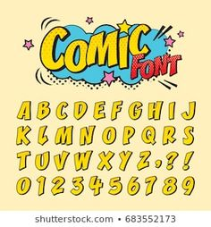

STUDYGRAM
TECNICA DE ESTUDIO
HERRAMIENTAS DE AYUDA
Son cuentas de instagram que se dedican a subir, generar o enseñar contenido de estudio. Tips para estudiar, de aprendizaje,
optimización de tiempo, preparación para exámenes, organización, etc. Son personas como tú y yo que estamos estudiando y necesitamos ayuda e inspiración
para dejar a un lado la procastinación.

LETTERING
El Lettering existe desde que el hombre comenzó a escribir, aunque recientemente haya ganado más popularidad entre los diseñadores gráficos y artistas. A esta técnica se le puede denominar también como Rotulación y podríamos definirla como “el arte de dibujar las letras“. El Lettering tuvo su máximo esplendor en los años 30-60 y fue muy visible con la estética Googie americana. Hoy en día es muy fácil que nos topemos con ejemplos de Lettering desde las marquesinas de los bares, las pizarras con el menú del día o en cualquier otra pieza promocional. Gracias a la creatividad y la publicidad el Lettering se ha convertido en toda una disciplina.

TIPOGRAFIA
  
En cambio, la tipografía se puede definir como “el arte de diseñar las letras”. Podemos denominar como tipografía a un conjunto de caracteres alfanuméricos (letras, números, signos, etc.) que cuentan con una serie de características en común. Todos sus caracteres se han diseñado siguiendo unas mismas pautas de estilo, para posteriormente ser incluidos de forma digital en un archivo con extensión TrueType / OpenType para añadirlos a nuestro catálogo tipográfico. Esto nos permite usarlas desde los ordenadores en nuestros escritos, diseños o composiciones, sin necesidad de diseñarlas una y otra vez.
Un estudio de diseño tipográfico que creemos que merece la pena conocer es House Industries, que también cuenta con su propio manual de Lettering.
APUNTES DIGITALES(HERRAMIENTAS)
Evernote:
Esta es una de las aplicaciones más utilizadas por los estudiantes, pues funciona para tomar apuntes en los dispositivos y luego tenerlos en el ordenador; tiene editor de texto completo, y aunque no es un procesador en toda la extensión de la palabra, sí funciona similar a este.
Además, permite, en cualquier dispositivo, manejar el formato de la letra, incluir tablas, listas, mapas, documentos, imágenes, crear bibliotecas de notas, etc., e incluirlos en las anotaciones.
Esta herramienta es gratuita, está enlazada a la aplicación Penultimate, se puede usar para tomar notas a mano usando un lápiz digital y está disponible para Android y iOS.
Otro plus es el buscador que incluye para ubicar, por ejemplo, notas o palabras escritas a mano dentro de los apuntes.
Google Keep:
Es una de las herramientas para tomar apuntes digitales de Google que tiene un servicio propio tal cual como Gmail y Google Drive, y con la cual se pueden crear notas de manera fácil y rápida, y compartirlas. Comenzar a usar Google Keep es muy fácil, debes acceder a la página del servicio, inmediatamente tendrás el espacio para escribir lo que quieras, agregar imágenes que estén archivadas en tu ordenador y subirlas.
Puedes cambiar el color de la nota, agregarle una nota de recordatorio para recibir un alerta al momento en que quieras compartirla, para lo cual debes registrar la dirección electrónica de la persona a la que la enviarás. Esta herramienta también permite clasificar las notas por categorías y agruparlas cómodamente de acuerdo con la filiación del tema (trabajo, familia, amigos) y tenerlas a la mano en cualquier dispositivo. Está disponible para iOS y Android.
Hackpad:
En la lista de herramientas para tomar apuntes digitales está Hackpad que permite trabajar de forma colaborativa en línea y con la que los usuarios pueden elaborar y editar contenidos en tiempo real en cada pad, que es el nombre de las páginas. También permite incluir listas y tablas.
Los usuarios de Hackpad pueden crear pads de manera individual o dentro de las colecciones previamente establecidas para que otros usuarios tengan acceso mediante invitación para editar las notas. A cada colaborador o usuario se le asigna un color diferente para cada texto, lo que facilitará saber qué aportó cada quien. A estos pads que hayas creado se pueden enlazar otros pads u otros usuarios usando el símbolo “@”.